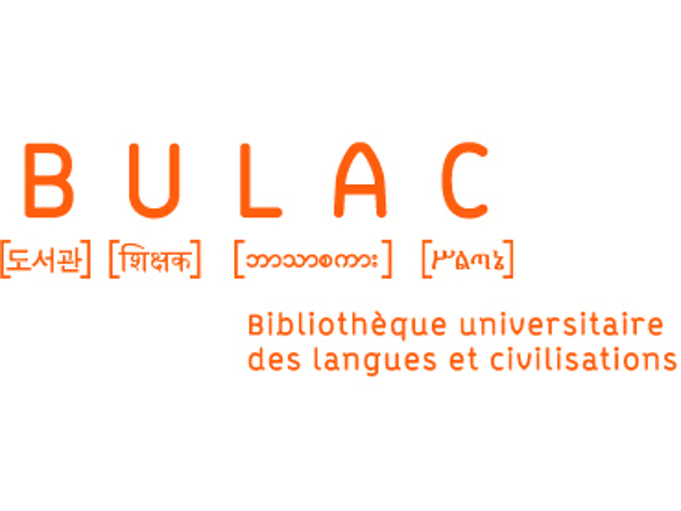

Lors de ce stage du 18 au 22 décembre 2017 j'ai appris pas mal de chose comme le code informatique avec un fichier html, la vie dans la BULAC, les differents types de metier au sein de la BULAC, les differents types d'etage, les devoirs de chaque personne travaillant a la BULAC, de nouveaux terme au rapport avec l'informatique et la bibiothèque en elle-même, les differents types de site et plein d'autre chose encore, c'est ce que j'explique au sein de ce rapport de stage.(ce rapport de stage a était completement fait en code)
La BULAC du vrai nom Bibliothèque universitaire des langues et civilisations est une bibliothèque atypique a mon goût, car je n’avais jamais vu une tel bibliothèque. La BULAC est une bibliothèque universitaire qui a ouvert ses portes le 12 décembre 2011 et constitue, avec l’Institut national des langues et civilisations orientales, le Pôle des langues et civilisations, situé, au sein de la ZAC Tolbiac Paris Rive Gauche, au 65, rue des Grands-Moulins, dans le quartier de la Gare du 13e arrondissement de Paris. Elle est spécialisée notamment dans des langues qui s’écrivent en caractères non-latins, correspondant à des domaines d’enseignement et de recherche de l’INALCO (l’INALCO est l’université avec laquelle la BULAC partage un bâtiment). Le bâtiment dont la construction a débuté à l’été 2008, est l’œuvre de l’architecte Yves Lion. Constitué de cinq niveaux sur 15 000 m2, il propose 910 places de lecture (d’après Wikipédia).La BULAC est partagé en 5 étage: le 1er étage qui est l’où se trouve l’administration et le pôle informatique côté professionnel (donc ceux qui y travaillent) et du côté public le 1et étage est une mezzanine ou il y a espaces de lecture ainsi que bureau pour travailler et ordinateur. RDC: Au RDC (Rez De Chaussé) se trouve le pôle médiation de la BULAC (côté professionnel) ainsi que une grande salle de lecture, des bureaux et des espaces ordinateur un peu comme la mezzanine (côté public). RJ (Rez de Jardin): Au RJ par contre il n’y a aucun bureau, ce n’est qu’un espace lecteur avec quelque salle insonore pour pouvoir travaille tranquillement principalement des salles pour 2 personnes. RB (Rez de chausser Bas): Au RB se trouve le pôle conservation, la collection des livres, le bureau de flux et données ainsi que des magasins: un magasin dans une bibliothèque ces un stockage donc une grande salle avec plein d’étagère pour stocker des livres, le RB est interdit d’accès au public. Et pour finir le SS (Sous-Sol): Le SS est un étage qui se séparent en 2 parties d’un côté les magasins et de l’autre un parking.
Lors de ce stage du 18 au 22 décembre 2017 inclus je suis resté principalement dans le pôle médiation en compagnie de mon tuteur de stage M. Martin alliasse PYM. Pym m’a appris principalement le code informatique avec différent types de code, plutôt du HTML mais tout de même un peu de PYTHON, le JQUERTY et peu de CSS, car le CSS était un type de code plutôt difficile à mon niveau et qu’il fallait compter le temps d’apprentissage de ce dernier en mois du coup on a opté pour le HTML car c’était un style de code facile a apprendre en ce peu de temps qui nous a était accordées (voir IV pour plus de détail en rapport avec le code). J’ai aussi fait la rencontre d’autre personne au sein de la BULAC comme MAXIME qui se gère de l’audio visuel (Montage, Production, etc.); Aymric qui travaille au pôle informatique de la BULAC, il gère principalement les commande d’ordinateur, souri, écran etc mais aussi d’aider ces collègues en cas de panne ainsi que Emile qui est le chef du pôle médiation. Pour se contacter au sein de la BULAC sans se déplacer, ils sont un GOOGLE DRIVE pour pouvoir partagé des dossiers pour pouvoir travaillé en groupe mais chacun dans un poste plus ou moins éloignée, ils sont aussi un autre “logiciel” qui s’appelle le GLPI celui-ci sert principalement à Aymric car dans ce GLPI on a un onglet ticket qui sert à prévenir Aymric lors d’une panne informatique ou autre.j'ai également en visitant les différents étage eu accès au serveur commun qui sont partagés entre la BULAC et L’INALCO. j’ai appris à faire des sites web juste avec du code, j’ai appris à lire du code, à améliorer la mise en page du code pour qu’il soit facile à lire, à faire du montage vidéo avec Maxime. EN plus bref j’ai appris plein de chose que je n’aurai probablement jamais appris sans ce stage.
mon tuteur de stage PYM du vrai nom Pierre-Yves Martin a fait des études en école d'ingénieur juste après avoir eu sont BAC S. En 2nd PYM a choisi une option TSA. Juste après le BAC il s'inscrit en classe préparatoire au Lycée Henri Bergson à Angers. IL obtient également en parralèlle une licence de physique chimie. Une fois ses étude fini il commence à travaillé dans le jeux video et il à même fait profeseur de physique remplacent.Puis il a terminé son chemin à la BULAC en enchainent de très long CDD.
Dans le code informatique il y a plusieurs chose a savoir comme:
Pour commencer il faut connaître les différents badge du code et surtout la définition pour comprendre ce que sait. Un badge est un mot clé pour indiquer ce que l’on souhaite faire dans notre code ex: h1 sert à écrire un titre c’est le mot clé qui indique a l’ordinateur qui lit le code que tout ce qu’il y a entre h1 et /h1 est un titre. Il ne faut pas oublier d’ouvrir est de refermer les badges et surtout qu’il est toujours entre: < > et pour les refermer il suffit juste de rajouter / avant le nom du badge ex:
Les badges que j’ai appris à utiliser sont: (ceci sont des badges en html 5)
Pour faire un rectangle. Plus de détail cliquez-ici
Titre en taille la plus grande. Plus de detail cliquez-ici
titre plus de détail cliquer sur le lien du h1
titre en taille moyenne plus de détail cliquer sur le lien du h1<
titre plus de détail cliquer sur le lien du h1
titre plus de détail cliquer sur le lien du h1
titre en taille la plus petite plus de détail cliquer sur le lien du h1
pour faire un paragraphe plus de détail cliquez-ici
pour faire une liste non ordonnée (des points) plus de détail cliquez-ici
pour faire une liste ordonnée(des chiffres) plus de détail cliquez-ici
une ligne d’une liste(répéter pour + de ligne) plus de détail cliquez-ici
insérer une image plus de détail cliquez-ici
inserer une ligne horizontale plus de détail cliquez-ici
pour insérer un lien plus de détail cliquez-ici
pour faire un tableau plus de détail cliquez-ici
| matin | après-midi | |
|---|---|---|
| lundi | lundi matin a mon arrivé j’ai visite les différents étage de la BULAC | Lundi après midi j’ai commencé à apprendre les premières chose à savoir sur le code, les différents types de site: dynamique, dynamique.0, statique. J’ai également appris le mode fonctionnement informatique de la BULAC. |
| mardi | Mardi matin en arrivant je me suis installé sur un bureau et toute la matinée j’ai fait un exercice pour apprendre à lire un code informatique. | mardi après midi je suis resté sur l’ordinateur de mon bureau pour commencer à coder avec les premiers badge et manipulation que j’avais apprit le matin et la veille. |
| mercredi | mercredi matin j’ai fait un tour du côté du pôle informatique en compagnie d’Aymric qui se charge de tout les petits problèmes informatiques de la BULAC, en même temps il m’a emmenée dans la salle des serveurs de la BULAC avec tous les ordinateurs serveur les câble internet et tout ce tralala. | mercredi après midi j’étais en compagnie de Maxime qui se charge de l’audiovisuel de la BULAC, il m’a montré ce qu’il fessait au sein de la BULAC (voir le III pour un peu plus de détail). |
| jeudi | jeudi matin j’ai continué à m’entrainer sur le codage html avec le début de la mise en page de mon rapport de stage en html. | jeudi après midi j’ai commencé à rédiger mon rapport de stage tout en html pour pouvoir m’entrainer en html tout en faisant mon rapport de stage.. |
| vendredi | Et pour finir sur ma dernière matinée à la BULAC j’ai continué mon rapport de stage en l’alimentant au fur et a mesure de ce qui se déroule dans mon bureau. | vendredi après-midi j'ai fini les derniers petits détail de mon rapport, fait un petit tour au service public du côté des magasins et j'ai dit en revoir a toute les personnes présente lors de cette semaine de stage inoubliables. |